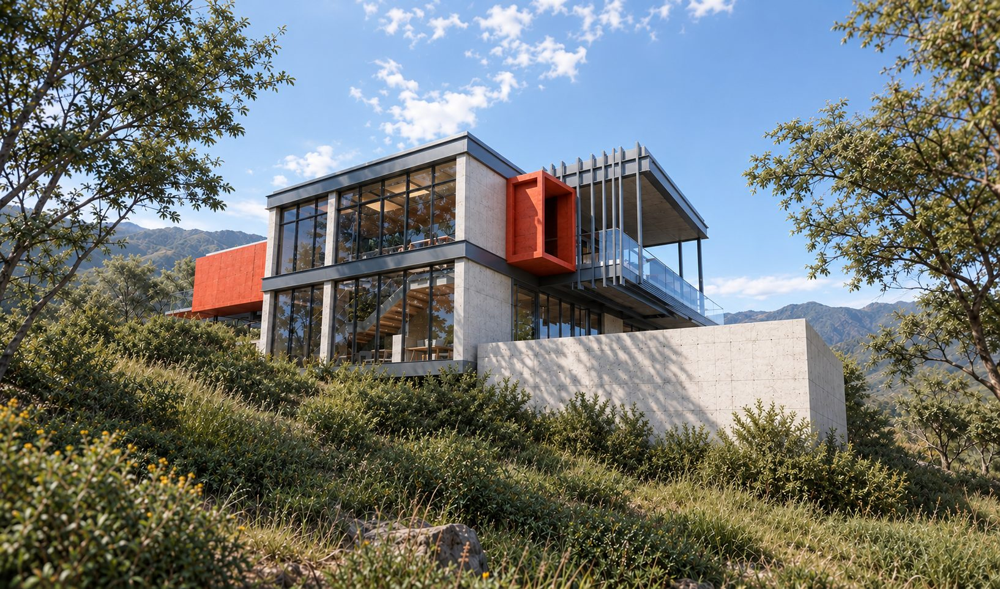
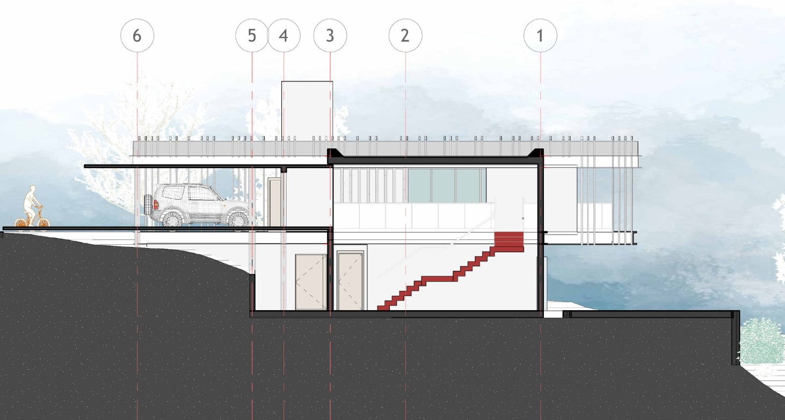
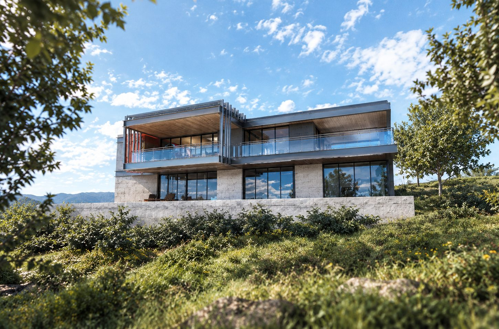
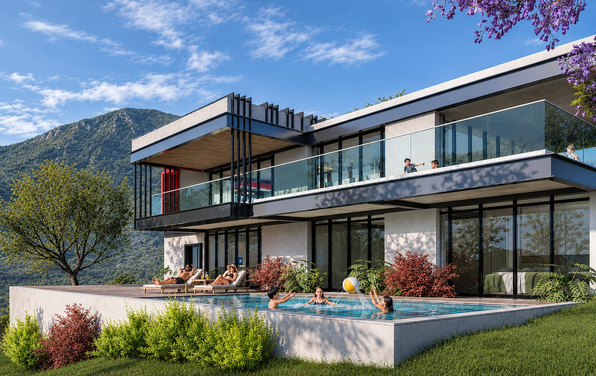
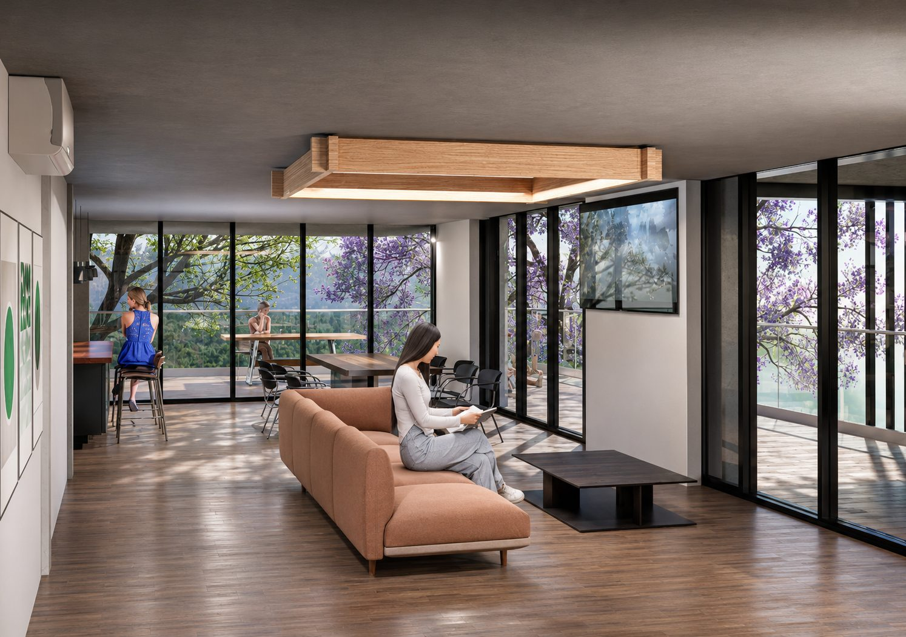
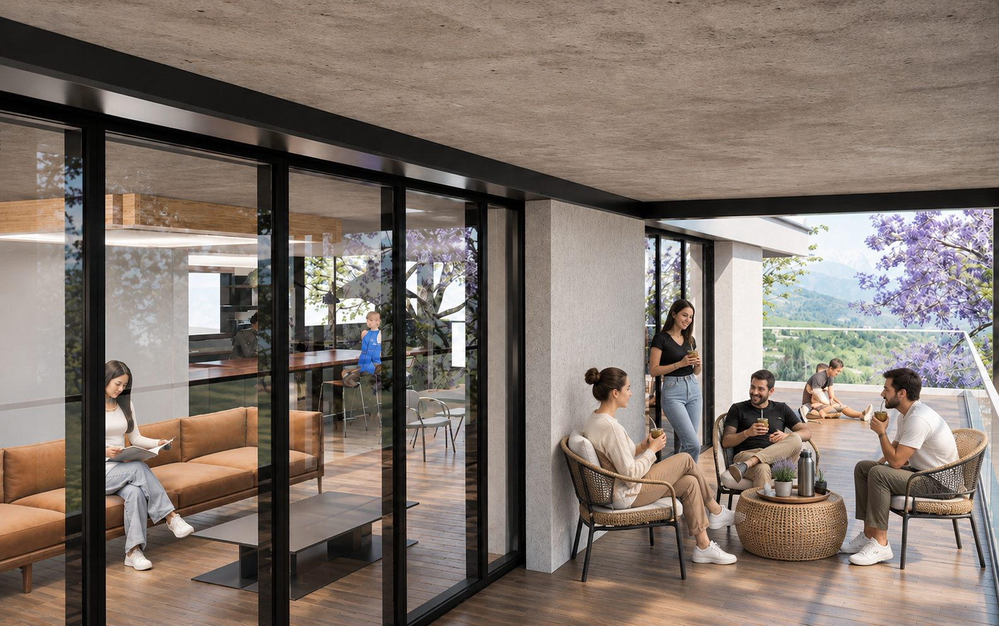
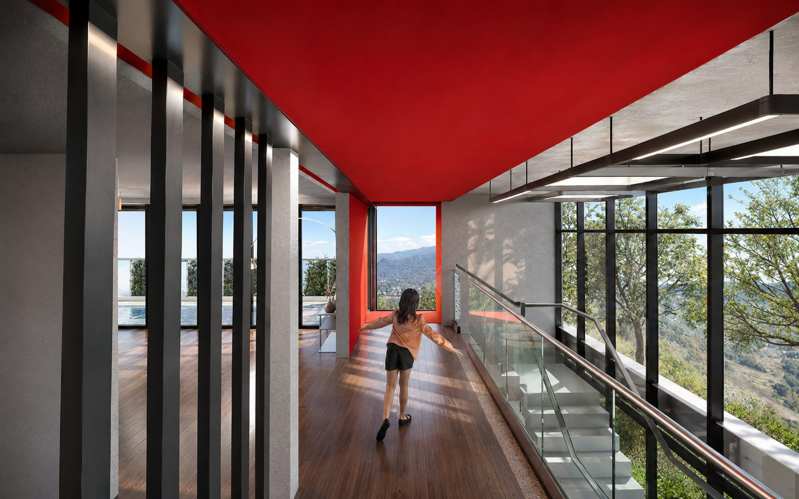

CASA CARMÍN

01 / Memoria descriptiva
LA MIRADACOMPRIMIDA.
01 / Vista general
Casa Carmín sobre la pendiente: el volumen se apoya y se proyecta sobre el terreno.
Una casa que no muestra el paisaje de golpe: lo comprime en un recorrido y lo libera al final.
La arquitectura organiza una secuencia de aproximaciones, filtros y aperturas. El horizonte aparece como una experiencia, no como una imagen inmediata.
02 / Implantación
UN TERRENOQUE INCLINA.
La pendiente no es un obstáculo. Es el punto de partida del proyecto.


La casa se posa y se proyecta sobre el terreno, construyendo nuevas relaciones con el paisaje.
03 / Volumetría
EL CRUCEEN X.

Dos direcciones se encuentran. La volumetría articula el movimiento y las vistas.
Una geometría que comprime y expande la experiencia espacial.
04 / Materialidad
FILTRAR.Dejar pasar.

05 / Balcón
ELBALCÓN.
Primer respiro.
Después de la compresión, la amplitud. La luz recorre los espacios y el interior vuelve a encontrarse con el paisaje.


media/06-mirada-libera.jpg06 / El umbral
LA MIRADASE LIBERA.
El tubo carmín dirige la mirada y trae el horizonte hacia adentro: desde el interior, el paisaje ya no se mira de lejos, se habita.
07 / Fragmentos
OTRASmiradas.
Exterior → Terraza → Interior → Pasarela · tocá para ampliar
08 / Recorrido
EL ESPACIOen movimiento.
Una secuencia para recorrer la arquitectura a otro ritmo.
09 / Epílogo
EL HORIZONTEaparece.
Leonel Mena · Diseño II · Módulo 4 · Arq. Griselda García · 2026